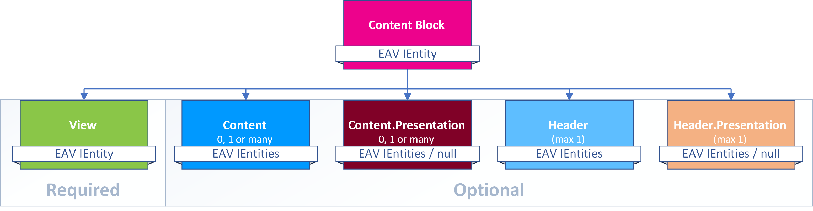
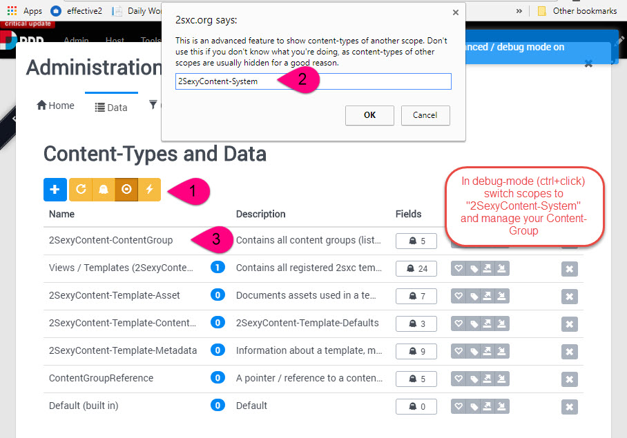

Content Blocks
Content items wouldn't do much - they must be shown to the user in the intended layout. The configuration of such a show these things using this template is handled in a ContentBlock. The data model for these Content Blocks looks like this:
So each Content Block has:
- One reference to a View configuration
- Zero, one or many references to content items
- The same amount of Content-Presentation items
- Zero or one references to Header items
- The same amount of Header-Presentation items
Tip
Content Blocks contain a reference to the View and optionally a bunch of Content Items that will be used/shown in that View. But there are actually 4 possible scenarios deciding what is actually shown:
- The View can show the content-items provided by the Content Block
- The View can be configured to use a Query and show data from that
- The Template code could also get data from the App directly and show that
- Combinations of the three options above are possible
Important
Since the View can also be configured to get data from other sources, it may show items that are not in the list of the Content Block.
Content Blocks in a CMS like Dnn
When you see 2sxc data in Dnn, that's because a module was added to the page pointing to a Content Block. If you want to know more about that, read 2sxc Content in Dnn.
Manually Managing this Data
Note: you shoudn't usually do this - but sometimes you have to. Check out this short explanation:
Note
This scerenshot above is from 2sxc 8. In 2sxc 11 you can change scopes in the dropdown below the data table.
FAQ
- If a page or module is deleted, does it also delete the Content Block?
No. Note that if a page or module is deleted, it goes into the Dnn trash, so it could always be restored again. - If a page or module is deleted from the trash, does it also delete the Content Block?
No. Dnn does not inform modules about delete actions, so we can't do clean-up. - Are Content Blocks which don't appear on a page orphaned and can I delete them?
Maybe. Since they could be used in other apps (see Content - Data made Useful) as Inner Content, there is no quick way to tell if it's being used elsewhere. - Can a Content Block be used on multiple modules / pages?
Yes. It's not common, but since a module can be shown on multiple pages or even on other portals, it would show the same Content Block there as well.